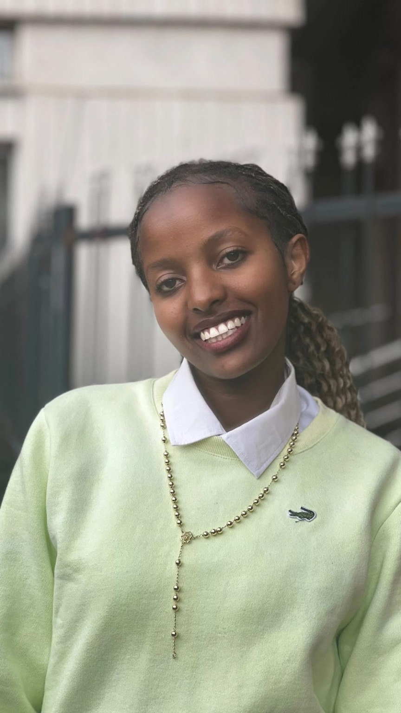
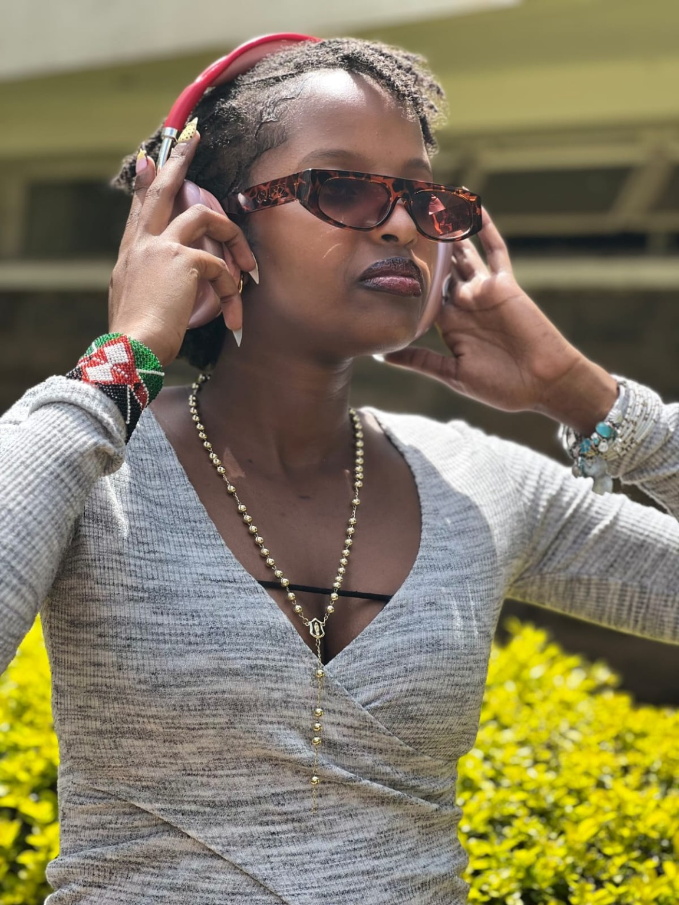
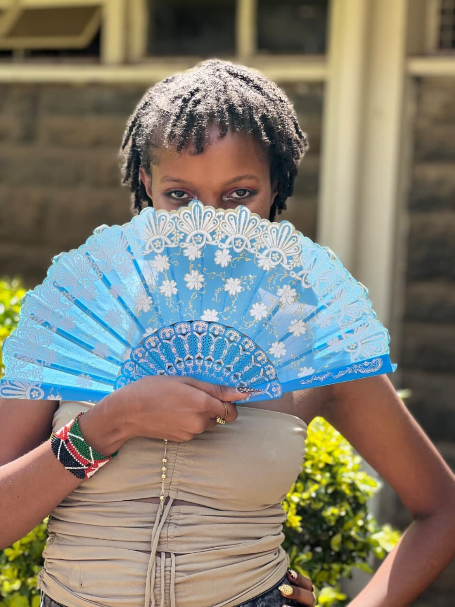

Articles & Reporting
Research-led articles and features that make complex subjects clear, human and engaging.
↗I’m Angela Ngetich — a journalist and visual storyteller passionate about uncovering meaningful stories, amplifying voices and capturing moments that matter.


FIG. 01 — IN THE FIELDGood journalism begins with curiosity — and the belief that every person, place and experience has a story worth telling.
I’m Angela Ngetich, a journalist with a love for people-centred storytelling. My work spans articles, interviews, photography and video production, bringing together thoughtful research, strong visuals and a clear point of view.
Whether I’m behind the camera, asking the next question or shaping a story in the edit, I aim to create work that informs, connects and stays with its audience.
Have a story in mind? Let’s talk ↗From the first question to the final frame, I bring stories to life across different formats.
Research-led articles and features that make complex subjects clear, human and engaging.
↗Thoughtful conversations that bring forward authentic voices, experiences and perspectives.
↗Visual storytelling that documents people, places and the details that give a story life.
↗Creating and editing compelling video stories, from capturing footage to the final cut.
↗
A MOMENT. A PERSPECTIVE.Journalism is more than gathering information. It is about being present, asking better questions and making room for perspectives that might otherwise go unheard.
See selected work ↗A growing collection of projects and visual moments.
Try another filter or add a new project to the gallery.
THIS PORTFOLIO IS ALWAYS IN PROGRESS — MORE STORIES TO COME.
Let’s collaborate, share ideas or talk about your next project. I’d love to hear from you.
Send me an email ↗